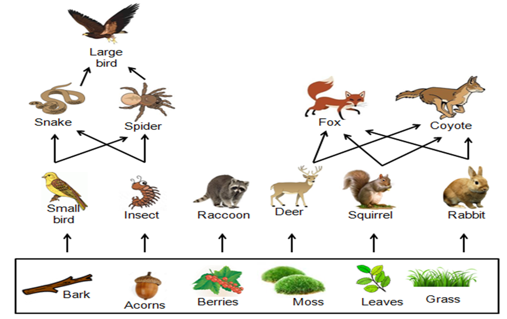

Understanding the Food Web
The food web in animals is a complex network of interconnected food chains. It shows how different species are linked through feeding relationships, making ecosystems stable and resilient.
- Multiple food chains overlap and connect
- Animals may belong to more than one food chain
- Energy flows through many paths
Examples of Food Webs
Example: In a forest, insects eat plants, birds eat insects, snakes eat birds, and hawks eat snakes. All these chains connect to form a web.
